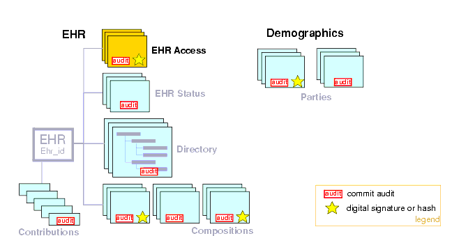
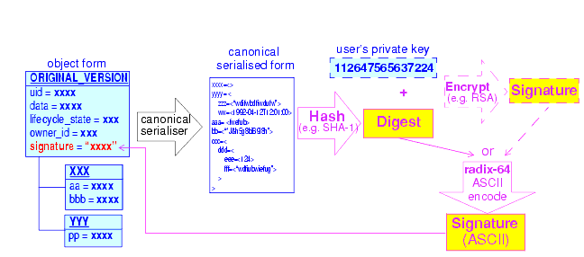

7 Security and Confidentiality
7.1 Requirements
Privacy, Confidentiality and Consent
Privacy (the right to limit who sees the personal data) and confidentiality (the obligation of others to respect the privacy of disclosed data) are primary concerns of many consumers with respect to e-Health systems. A widely accepted principle is that information provided (either directly or due to observation or testing of specimens etc.) in confidence by a patient to health professionals during an episode of care should only be passed on or otherwise become available to other parties if the patient agrees; put more simply: data sharing must be controlled by patient consent. A more complex sub-requirement for some patients is allowing differential access to parts of their health record, for example, relatively open access rights to most of the health record, but limited access to sexual or mental health items. The interrelatedness of health information can make this difficult. For example the medication list will often give away sensitive conditions even if the diagnosis is hidden, yet is needed for any safe treatment, and many health professionals would see the unavailability of current medications (and allergies) information as highly problematic for giving even basic care.
Requirements of Healthcare Providers
On the other hand, clinical professionals delivering care want fast access to relevant data, and to be sure that what they see on the screen is a faithful representation of what has been said about the patient. Emergency access to health records is sometimes needed by carers otherwise unrelated to the normal care of a patient; such accesses can only be consented to in a general way, since the specific providers involved will not usually be known.
Researchers in healthcare generally want access to the data of large numbers of patients in order to evaluate current care and improve it (clinical knowledge discovery), and for educational purposes. Both of these latter needs are also ultimately patient and societal priorities. Providing effective care and supporting ongoing medical research therefore have to function in a system that implements the concept of patient consent.
Specifying Access Control
In theory, it should be easy for the patient or some clinical professional to specify who can see the patient record. In some cases it is can be done by direct identification, e.g. the patient might nominate their long-term GP by provider id. Some exclusions could potentially be made this way as well, for example a previous doctor with whom the patient has a problematic personal relationship.
However it soon becomes difficult to identify provider parties individually when the patient moves into parts of the healthcare system where there are many staff, and/or where there is no previously established relationship. The advent of e-prescribing and e-pharmacy will bring even larger numbers of health and allied health workers into the e-Health matrix, making the problem of individual identification of who should see the patient's data infeasible. Further, there is a large and growing category of "very mobile" people (the military, entertainers, NGO workers, international business and tourism professionals, athletes....) who cannot predict even in which country they may require care. As a consequence, the need for some access control to be specified in terms of categories or role types appears inescapable.
The Problem of Roles
One of the difficult challenges to implementing access control to health information is that of defining "roles", i.e. the status of users of the record at the time when right of access is being determined. In principle, roles ought to be knowable in advance. For example, the labels "nurse", "GP" and "psychiatrist" can be relatively easily assigned to individuals. However, the kinds of labels that are of more importance are those that differentiate among (for example) personal carers (e.g. primary GP), other care delivery staff (e.g. nurses, aged carers) and support staff (e.g. pathologists, radiographers). In a patient care delivery-oriented view of the world, the professional level of a health care professional is probably less important than his or her relationship to the current care process for the patient.
It will not always be clear which individuals fall into any of these categories at any time, or how such terms are even defined in different sites and jurisdictions. Realistically, the evaluation of a role category such as "care deliverer" into particular identities such as those of nurses on the ward on a particular day must be done in each care delivery environment, not in the EHR. Access decisions for information in the EHR therefore will have some dependence on provider site knowledge of which staff are actively involved in the care process of a given patient.
Role-based access control is further complicated by the common fact of temporary replacements due to illness or holiday and role changes due to staff shortages. Further, if a physician employing a medical secretary requires her to access and update sensitive parts (relating to his own treatment of the patient) of the record, access at the highest level is effectively given to someone not medically trained or related directly to the patient's care, even if only for 10 minutes. Any role-based system therefore has to take into account the messy reality of clinical care in the real world rather than being based solely on theoretical principles.
Usability
Usability of security and privacy mechanisms is a key requirement of a health record architecture. Some very elegant solutions to fine-grained access control designed by security experts would be simply unusable in practice because they would take too long for patients and doctors to learn, or are too time-consuming to actually use on the screen; they could also be too complex to safely implement in software.
The following sections describe support in openEHR for the main security and privacy requirements of EHRs.
7.2 Threats to Security and Privacy
Any model of how security and privacy are supported in the health record must be based on some notion of assumed threats. Without going into great detail, security threats assumed by openEHR include the following (here "inappropriate" means anything that is not or would not be consented to by the patient):
- human error in patient identification, leading to incorrect association of health data of one patient with another. Mis-identification of patients can cause personal data for one patient to go into the record of another patient (leading to privacy violations and possibly clinical errors), or into a new record rather than the existing one for the same patient (leading to two or more clinically incomplete records);
- inappropriate access by health professionals or others in the physical care delivery environment (including e.g. any worker in a hospital) not involved in the current care of the patient;
- inappropriate access by other persons known to the patient, e.g. a by family member;
- inappropriate access of health data by corporate or other organisations e.g. for purposes of insurance discrimination;
- malicious theft of or access to health data (e.g. of a celebrity or politician) for profit or other personal motives;
- generic threats to data integrity and availability, such as viruses, worms, denial of service attacks etc.;
- failures in software (due to bugs, incorrect configuration, interoperability failures etc.) causing corruption to data, or incorrect display or computation, resulting in clinical errors.
A key principle with respect to the design of mechanisms supporting security, confidentiality and integrity has to be kept in mind: the likelihood of any given mode of targeted inappropriate access is proportional to the perceived value of the information and inversely proportional to the cost of access. To paraphrase Ross Anderson's BMA paper1 on health data security, for a given access, the perpretrator will try to find the simplest, cheapest and quickest method, which is more likely to be bribery or burglary than James Bond-inspired technology. openEHR makes use of this principle by providing some relatively simple mechanisms that are cheap to implement but can make misuse quite difficult, without compromising availability.
7.3 Solutions Provided by openEHR
7.3.1 Overview
Many of the concrete mechanisms relating to security and privacy are found in system deployments rather than in models such as openEHR, particularly the implementation of authentication, access control, and encryption. The openEHR specifications and core component implementations do not explicitly define many concrete mechanisms since there is great variability in the requirements of different sites - secure LAN deployments many require minimal security inside, whereas web-accessible health record servers are likely to have quite different requirements. What openEHR does is to support some of the key requirements in a flexible enough way that deployments with substantially different requirements and configurations can nevertheless implement the basic principles in a standard way.
FIGURE 21 illustrates the main security measures directly specified by the openEHR architecture. These include EHR/demographic separation and an EHR-wide access control object. At the level of versioned objects, commit audits (mandatory), digital signatures and hashes are available. The following subsections describe these features in more detail.

7.3.2 Security Policy
In and of itself, the openEHR EHR imposes only a minimal security policy profile which could be regarded as necessary, but generally not sufficient for a deployed system (i.e. other aspects would still need to be implemented in layers whose semantics are not defined in openEHR). The following policy principles are embodied in openEHR.
General
- Indelibility: health record information cannot be deleted; logical deletion is achieved by marking the data in such a way as to make it appear deleted (implemented in version control).
- Audit trailing: All changes made to the EHR including content objects as well as the EHR status and access control objects are audit-trailed with user identity, time-stamp, reason, optionally digital signature and relevant version information; one exception is where the modifier is the patient, in which case, a symbolic identifier can be used (known as PARTY_SELF in openEHR; see next point).
- Anonymity: the content of the health record is separate from identifying demographic information. This can be configured such that theft of the EHR provides no direct clue to the identity of the owning patient (indirect clues are of course harder to control). Stealing an identified EHR involves theft of data from two servers, or even theft of two physical computers, depending on deployment configuration.
Access Control
- Access list: the overriding principle of access control must be "relevance" both in terms of user identity (who is delivering care to the patient) and time (during the current episode of care, and for some reasonable, limited time afterward). An access control list can be defined for the EHR, indicating both identified individuals and categories, the latter of which might be role types, or particular staff groups.
- Access control of access settings: a gate-keeper controls access to the EHR access control settings. The gate-keeper is established at the time of EHR creation as being one of the identities known in the EHR, usually the patient for mentally competent adults, otherwise a parent, legal guardian, advocate or other responsible person. The gate-keeper determines who can make changes to the access control list. All changes to the list are audit-trailed as for normal data (achieved due to normal versioning).
- Privacy: patients can mark Compositions in the EHR as having one of a number of levels of privacy. The definition of the privacy levels is not hard-wired in the openEHR models but rather is defined by standards or agreements within jurisdictions of use.
- Usability: The general mentality of access control setting is one of "sensible defaults" that work for most of the information in the EHR, most of the time. The defaults for the EHR can be set by the patient, defining access control behaviour for the majority of access decisions. Exceptions to the default policy are then added. This approach minimises the need to think about the security of every item in the EHR individually.
Other security policy principles that should be implemented in even a minimal EHR deployment but are not directly specified by openEHR include the following.
- Access logging: read accesses by application users to EHR data should be logged in the EHR system. Currently openEHR does not specify models of such logs, but might do so in the future. Studies have shown that making users aware of the fact of access logging is an effective deterrent to inappropriate access (especially where other controls are not implemented). There are some proponents of the argument that even read-access logs should be made part of the content of the EHR proper; currently openEHR does not support this approach.
- Record demerging: when data for a patient is found to be in another patient's EHR, the access logs for that EHR should be used to determine who has accessed that data, primarily to determine if subsequent clinical thinking (e.g. diagnoses, medication decisions) have been made based on wrong information.
- Record merging: when more than one EHR is discovered for the same patient, and have to be merged into a single record, the access control lists have to be re-evaluated and merged by the patient and potentially relevant carers.
- Time-limitation of access: mechanisms should be implemented that limit the time during which given health professionals can see the patient record. Usually, the outer limits are defined by the interval of the episode of care in an institution plus some further time to cover follow-up or outpatient care. Episode start and end are recorded in openEHR as instances of the ADMIN_ENTRY class, containing admission and discharge details.
- Non-repudiation: if digital signing of changes to the record is made mandatory, non-repudiation of content can be supported by an openEHR system. The digital signing of communications (EHR Extracts) is also supported in openEHR; coupled with logging of communication of Extracts, this can be used to guarantee non-repudiation of information passed between systems (cf. information passed between back-end and front-end applications of the same system).
- Certification: a mechanism should be provided to allow a level of trust to be formally associated with user signing keys.
A key feature of the policy is that it must scale to distributed environments in which health record information is maintained at multiple provider sites visited by the patient.
As Anderson points out in the BMA study, policy elements are also needed for guarding against users gaining access to massive numbers of EHRs, and inferencing attacks. Currently these are outside the scope of openEHR, and realistically, of most EHR implementations of any kind today.
The following sections describe how openEHR supports the first list of policy objectives.
7.3.3 Integrity
Versioning
The most basic security-related feature of openEHR is its support for data integrity. This is mainly provided by the versioning model, specified in the change_control package in the Common Information Model, and in the Extract Information Model. Change-set based versioning of all information in the EHR and demographic services constitutes a basic integrity measure for information, since no content is ever physically modified, only new versions are created. All logical changes and deletions as well as additions are therefore physically implemented as new Versions rather than changes to existing information items. Clearly the integrity of the information will depend on the quality of the implementation; however, the simplest possible implementations (1 Version = 1 copy) can provide very good safety due to being write-once systems.
The use of change-sets, known as Contributions in openEHR, provides a further unit of integrity corresponding to all items modified, created or deleted in a single unit of work by a user.
The openEHR versioning model defines audit records for all changed items, which can be basic audits and/or any number of additional digitally signed attestations (e.g. by senior staff). This means that every write access of any kind to any part of an openEHR record is logged with the user identification, time, reason, and potentially other meta-data. Versioning is described in detail in section 8 on page 47.
Digital Signature
The possibility exists within an openEHR EHR to digitally sign each Version in a Versioned object (i.e. for each Version of any logical item, such as medications list, encounter note etc.). The signature is created as a private-key encryption (e.g. RSA-1) of a hash (e.g. MD5) of a canonical representation (such as in schema-based XML) of the Version being committed. A likely candidate for defining the signature and digest strings in openEHR is the openPGP message format (IETF RFC24402), due to being an open specification and self-describing. The use of RFC2440 for the format does not imply the use of the PGP distributed certificate infrastructure, or indeed any certification infrastructure; openEHR is agnostic on this point. If no public key or equivalent infrastructure is available, the encryption step might be omitted, resulting in a digest only of the content. The signature is stored within the Version object, allowing it to be conveniently carried within EHR Extracts. The process is shown in FIGURE 22.

The signing of data in a versioning system acts as an integrity check (the digest performs this function), an authentication measure (the signature performs this function), and also a non-repudiation measure. To guard against hacking of the versioned persistence layer itself, signatures can be forwarded to a trusted notarisation service. A fully secure system based on digital signing also requires certified public keys, which may or may not be available in any given environment.
One of the benefits of digitally signing relatively small pieces of the EHR (single Versions) rather than the whole EHR or large sections of it is that the integrity of items is more immune to localised repository corruptions.
7.3.4 Anonymity
As described above in section 6.1, one of the features of the openEHR EHR is a separation of EHR (clinical and administrative) information and demographic information. This mainly relates to references to the patient rather than to provider entities, since the latter are usually publicly known. A special kind of object known as PARTY_SELF in openEHR is used to refer to the subject in the EHR. The only information contained in a PARTY_SELF instance is an optional external reference. The openEHR EHR can be configured to provide 3 levels of separation by controlling whether and where this external identifier is actually set in PARTY_SELF instances, as follows:
- Nowhere in the EHR (i.e. every PARTY_SELF instance is a blank placeholder). This is the most secure approach, and means that the link between the EHR and the patient has to be done outside the EHR, by associating EHR.ehr_id and the subject identifier. This approach is more likely for more open environments.
- Once only in the EHR Status object (subject attribute), and nowhere else. This is also relatively secure, if the EHR Status object is protected in some way.
- In every instance of PARTY_SELF; this solution is reasonable in a secure environment, and convenient for copying parts of the record around locally.
This simple mechanism provides a basic protection against certain kinds of information theft or hacking if used properly. In the most secure situation, a hacker has to steal not just EHR data but also separate demographic records and an identity cross reference database, both of which can be located on different machines (making burglary harder). The identity cross-reference database would be easy to encrypt or protect by other security mechanisms.
7.4 Access Control
Overview
Access control is completely specified in an openEHR EHR in the EHR_ACCESS object for the EHR. This object acts as a gateway for all information access, and any access decision must be made based on the policies and rules it contains.
One of the problems with defining the semantics of the EHR Access object is that there is currently no published formal, proven model of access control for shared health information. Various efforts underway include the CEN EN13606 part 4 work, the ISO PMAC (Privilege Management and Access Control) work being done in TC/215 based on the generic security standard ISO/IEC 17799. Undoubtedly experimental and even some limited production health information security implementations exist. In reality however, no large-scale shared EHR deployments exist, and so security solutions to date are still developmental.
The openEHR architecture is therefore designed to accommodate alternative models of access control, each defined by a subtype of the class ACCESS_CONTROL_SETTING (Security IM). This approach means that a simplistic access control model can be defined and implemented initially, with more sophisticated models being used later. The "scheme" in use at any given time is always indicated in the EHR Access object.
1see e.g. Ross Anderson - "Security in Clinical Information Systems" available at http://www.cl.cam.ac.uk/users/rja14/policy11/policy11.html.
|
openEHR Foundation http://www.openEHR.org |